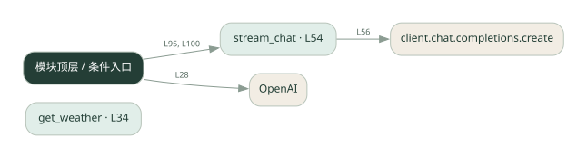

1-5 · 全课程第 5 节
流式输出与工具调用
stream_agent.py
源码快照 52aa9f73e4bb · 静态解析 · 2026-09-10
01 / 要完成的事
逐段接收模型输出；工具参数收齐后再调用工具，把结果交回模型。
02 / 为什么要做
整段生成完才显示会让用户一直等待，而工具参数又可能被切成多段。
03 / 当前代码状态
模型请求与本地工具是不同边界：这些文件中的天气工具使用示例逻辑，不能将示例天气当成实时查询结果。
存在外部服务或模型依赖；执行前需按源文件配置依赖和凭据，可能联网或产生 API 费用。 本次只做静态解析，没有运行练习，也没有替你填写或修改原代码。
04 / 调用图
打开大图 ↗实线：源码中的直接调用；虚线：函数引用/注册、动态调用或按方法名推断的候选。L 是调用所在源码行号。箭头不表示执行顺序或每次必经；分支、循环、异步调度及框架内部调用需结合源码。灰色是外部/未解析目标，橙色是动态分发；省略 print、len 和常规容器操作以减少干扰。孤立函数可能尚未接入。

先从 模块入口 出发，沿箭头找到本文件函数，再查看外部调用或动态分发。右侧调用清单保留所有静态调用点，能回到原文件逐行对照。
05 / 函数定位
| 函数 / 定义行 | 职责（源码注释） | 内部调用 |
|---|---|---|
get_weatherL34 | 以源码函数体为准；下列调用展示其依赖。 | 未发现显式函数调用（可能直接计算、读写状态或尚未实现） |
stream_chatL54 | 以源码函数体为准；下列调用展示其依赖。 | client.chat.completions.create, print, len, tool_calls.append |
这样做的优点
用户更早看到文字；能理解文字流和工具调用如何衔接。
代价与局限
分片组装、多个工具索引和中途断流增加处理难度；流式不保证总耗时更短。
适用场景
聊天界面、需要即时反馈的问答。
不宜直接照搬
只需要最终结构化结果的后台批处理。
动手检验理解
观察一个工具参数是否分多次到达：参数完整前能否解析 JSON？
有未实现位置时先预测，再补齐验证。能启动不等于逻辑正确。
查看全部 11 个静态调用 / 引用点
| 调用方 | 目标 | 源码行 | 类型 |
|---|---|---|---|
| <模块入口> | OpenAI | 28 | 调用 |
| stream_chat | client.chat.completions.create | 56 | 调用 |
| stream_chat | print | 75 | 调用 |
| stream_chat | len | 81 | 调用 |
| stream_chat | tool_calls.append | 82 | 调用 |
| <模块入口> | print | 94 | 调用 |
| <模块入口> | stream_chat | 95 | 调用 |
| <模块入口> | print | 96 | 调用 |
| <模块入口> | print | 99 | 调用 |
| <模块入口> | stream_chat | 100 | 调用 |
| <模块入口> | print | 101 | 调用 |